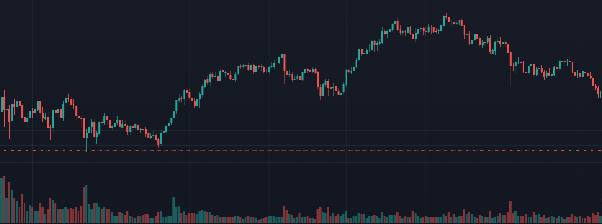
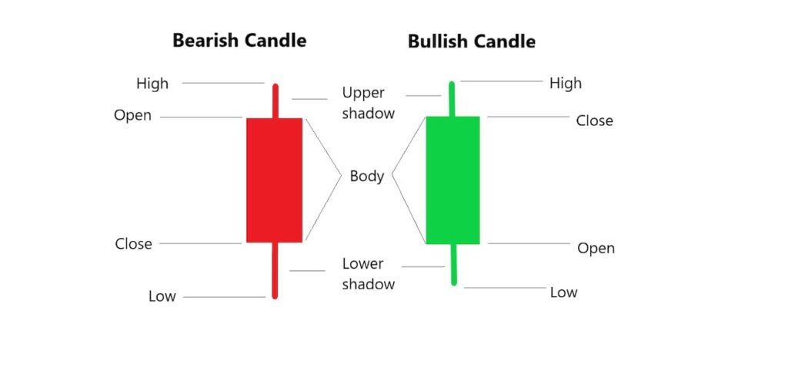
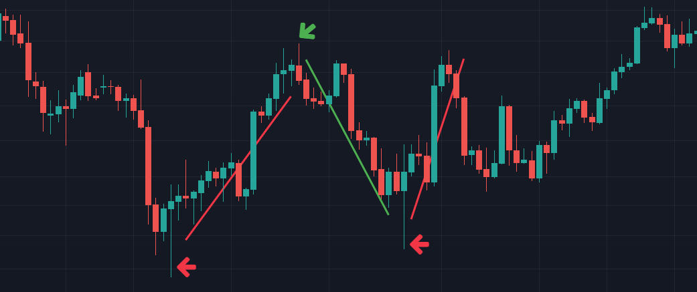
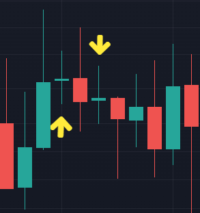

With just one K-line, you can know the opening price, closing price, highest price and lowest price of a certain target during this period. Combining the candlesticks for a period of time can draw a candlestick chart with time on the horizontal axis and price on the vertical axis.

Why is k line so important?
The market is changing every second. K line can simplify the information and present the trend of the stock price in a visual way, allowing us to see the opening price, closing price, highest price and lowest price for a period of time. A single candlestick can illustrate the sentiment of the market from opening to closing during that period, so candlesticks are also regarded as the basics of technical analysis.

Green K: When the closing price is higher than the opening price, it is indicated in green.
Red K: When the closing price is lower than the opening price, it is indicated in red.
Lines that stand out above and below the K line are called shadows.
Upper shadow: the part that represents the higher price, the top is the highest price
Lower shadow: Indicates the lower price part, the low point is the lowest price
 The shadow line and candle body of the k-line can show the possible next trend of the market.
Lower shadow: it means there is support below
Upper shadow line: it means there is resistance above
 Doji Candlestick
The support/resistance is equivalent, and the bumpy will continue later